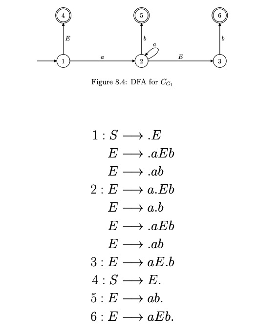

内容简介
E
/ | \
E + E
| /|\
i E * E
| |
i i$程序语言$让人和机器都能看懂...,
parser 能让机器看懂程序语言
示例：(表达式)
$
E \to i \\
E \to E + E \\
E \to E * E \\
E \to ( E ) \\
$
$ \alpha \to \beta $
$\alpha$ 始终是一个非终结符
形如:$aA \to ab$ 就不是上下文无关文法
形如:
$
A \to aB \\
B \to b
$
就是上下文无关文法
$
A \to aB \\
B \to b
$
就是上下文无关文法
推导:由$A \to aB 和 B \to b $ 生成字符串$ab$
自顶向下, 向左推导, LL分析器, ANTLR
规约:由$ab$ 生成$aB,$生成$A$
自底向上, 向右规约, LR, YACC
示例(LR(0) 分析器):
$ S \to E \\
E \to aEb \\
E \to ab
$

$s_n$ 表示移进到状态n
$r_k$ 表示按照规则 k 规约
无法分析如下语法：
$
L \to D; \\
D \to t V \\
V \to i \\
V \to i,V
$
D 为类型声明, V 为变量, t为类型, i为标识符
解析到 int x $\bullet$,y 应该规约还是应该移进?
需要向前看一个字符
yacc/bison 采用LALR(1)生成解析器
LA表示Look Ahead,括号中1表示前看符号个数
LALR(1) 仍然无法解决表达式语法:
$ E \to i \\
E \to E + E \\
E \to E * E \\
E \to ( E ) \\
$
如 $ E+E\bullet *i \\
E+ E\bullet + i$
应该规约还是应该移进?
采用优先级, 左结合, 右结合
yacc 语法是:
$ E+E\bullet *i \\ E+ E\bullet + i \\ 应该规约还是应该移进? \\ \text{ * 优先级高于+, 移进} \\ \text{ + 左结合, 规约} $
结构
grammar
rules
|
v
+---------+
| Yacc |
+---------+
|
v
+---------+ +---------+
Input -> | lexer | -> | yyparse | -> Parsed input
+---------+ +---------+
Yacc Rob Pike 认为, 正则表达式方式难以理解也难以调试, 生成解析器的工具
生成parser的go代码
编译生成的解析器
解析器运行
结构
声明部分
%%
规则部分
%%
辅助函数声明部分
%{
// 嵌入的 go 代码
%}
// token 声明, type 声明, start 声明, union 声明规则部分
left part : right part { action }例如：
E:
E '+' E {
$$ = $1 + $3
} ./bin/yaccgo generate go examples/expr.y out/expr.go ./bin/yaccgo generate go --httpdebug=true examples/exprhttp.y out/expr.go